Manual de Administrador
Este es el manual de administrador, una guía para realizar las acciones que estan disponibles como administrador.
Índice
Administrar Moderadores
En primer lugar vamos a dirigirnos a nuestro panel de usuario en la esquina superior derecha de la pantalla
Una vez allí elegiremos administrar moderadores.
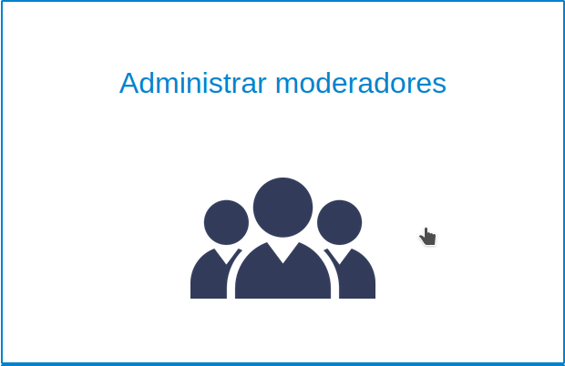
Encontraremos la vista donde se muestran los moderadores y las acciones a realizar con ellos.
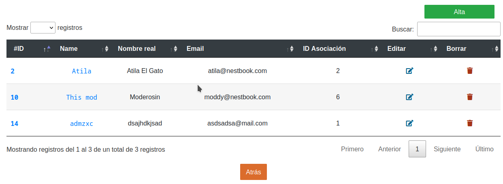
Acciones disponibles
- Crear moderador
- Editar moderador
- Borrar moderador
Crear moderador
Como podemos ver en la imagen de arriba tenemos en la esquina superior derecha (o en el centro desde la vista movil) el botón "Alta". Lo siguiente sería rellenar el formulario de alta. El moderador comenzará con la contraseña que le haya asignado el admin, pudiendo cambiarla posteriormente en su panel de usuario.
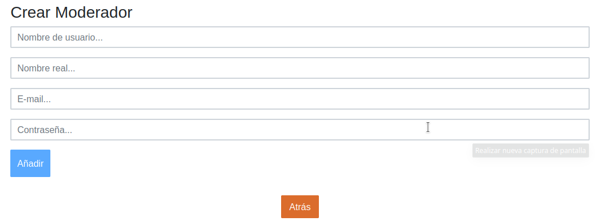
Editar moderador
Como podemos ver en la imagen de arriba tenemos en la parte derecha de la tabla el botón "Editar" (Icono de papel con lápiz). Lo siguiente sería rellenar el formulario de edición.
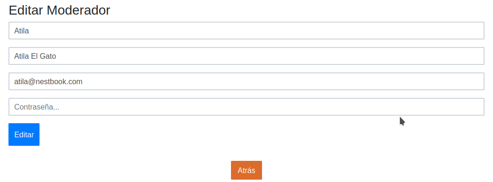
Borrar moderador
Como podemos ver en la imagen de arriba tenemos en la parte derecha de la tabla el botón "Borrar" (Icono de papelera).
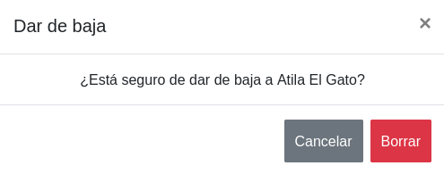
Administrar Asociaciones
En primer lugar vamos a dirigirnos a nuestro panel de usuario en la esquina superior derecha de la pantalla
Una vez allí elegiremos administrar asociaciones.
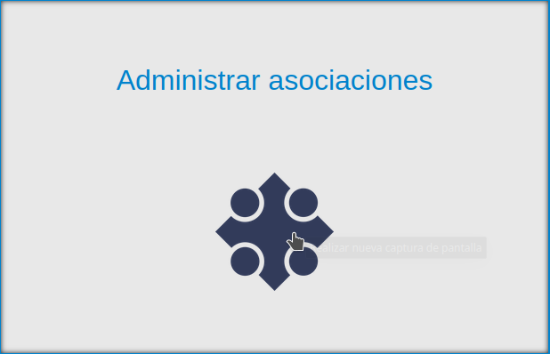
Encontraremos la vista donde se muestran los asociaciones y las acciones a realizar con ellos.
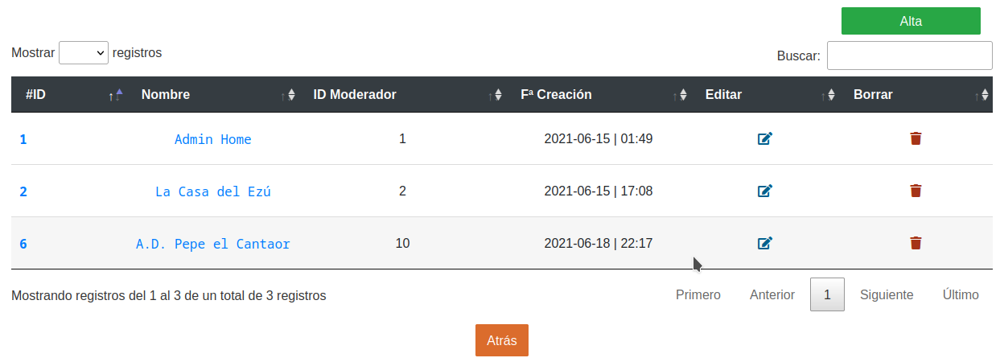
Acciones disponibles
- Crear asociación
- Editar asociación
- Borrar asociación
Crear asociación
Como podemos ver en la imagen de arriba tenemos en la esquina superior derecha (o en el centro desde la vista movil) el botón "Alta". Lo siguiente sería rellenar el formulario de alta.
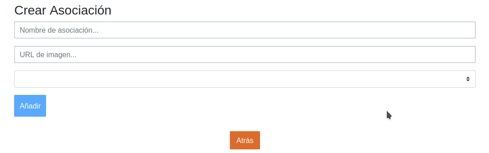
Editar asociación
Como podemos ver en la imagen de arriba tenemos en la parte derecha de la tabla el botón "Editar" (Icono de papel con lápiz). Lo siguiente sería rellenar el formulario de edición.
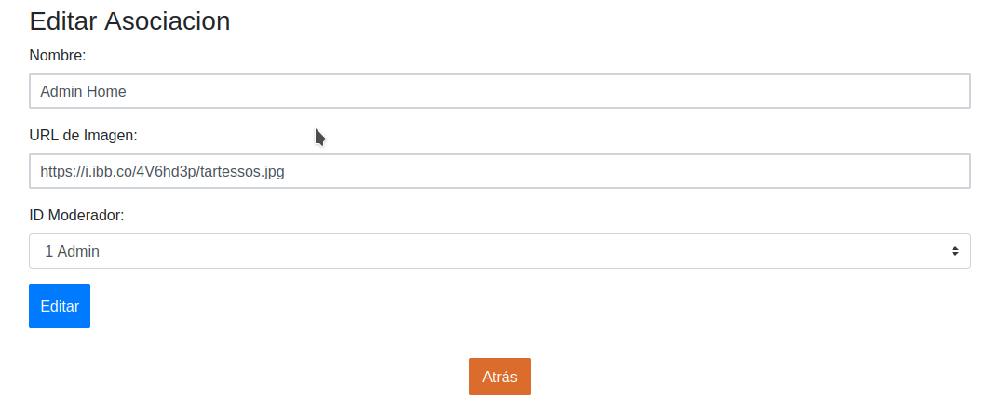
Borrar asociación
Como podemos ver en la imagen de arriba tenemos en la parte derecha de la tabla el botón "Borrar" (Icono de papelera).

Administrar Publicaciones
En primer lugar vamos a dirigirnos a nuestro panel de usuario en la esquina superior derecha de la pantalla
Una vez allí elegiremos administrar publicaciones.
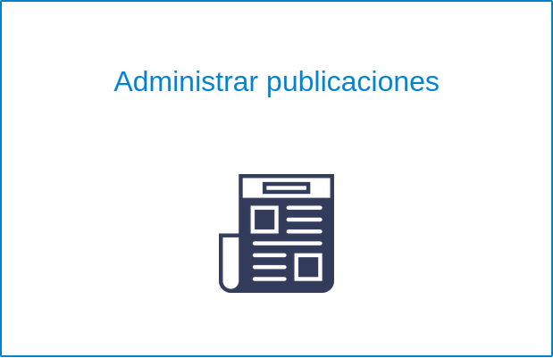
Encontraremos la vista donde se muestran los publicaciones y las acciones a realizar con ellos.
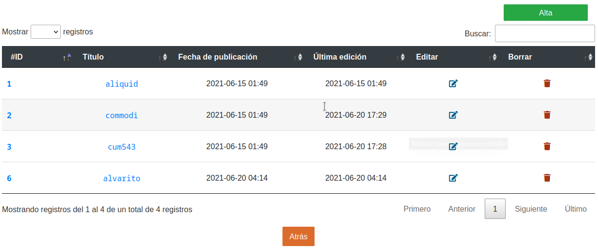
Acciones disponibles
- Crear publicación
- Editar publicación
- Borrar publicación
Crear publicación
Como podemos ver en la imagen de arriba tenemos en la esquina superior derecha (o en el centro desde la vista movil) el botón "Alta". Lo siguiente sería rellenar el formulario de alta.
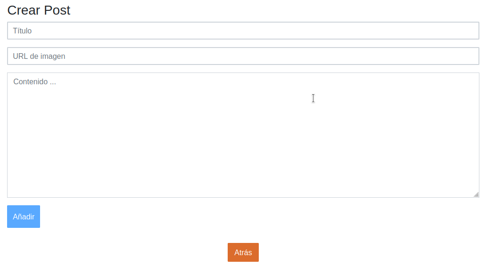
Editar publicación
Como podemos ver en la imagen de arriba tenemos en la parte derecha de la tabla el botón "Editar" (Icono de papel con lápiz). Lo siguiente sería rellenar el formulario de edición.
Borrar publicación
Como podemos ver en la imagen de arriba tenemos en la parte derecha de la tabla el botón "Borrar" (Icono de papelera).
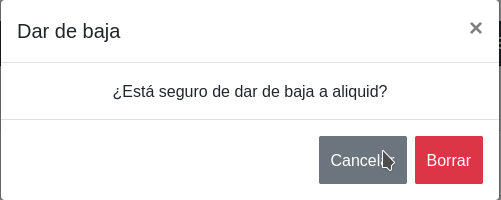